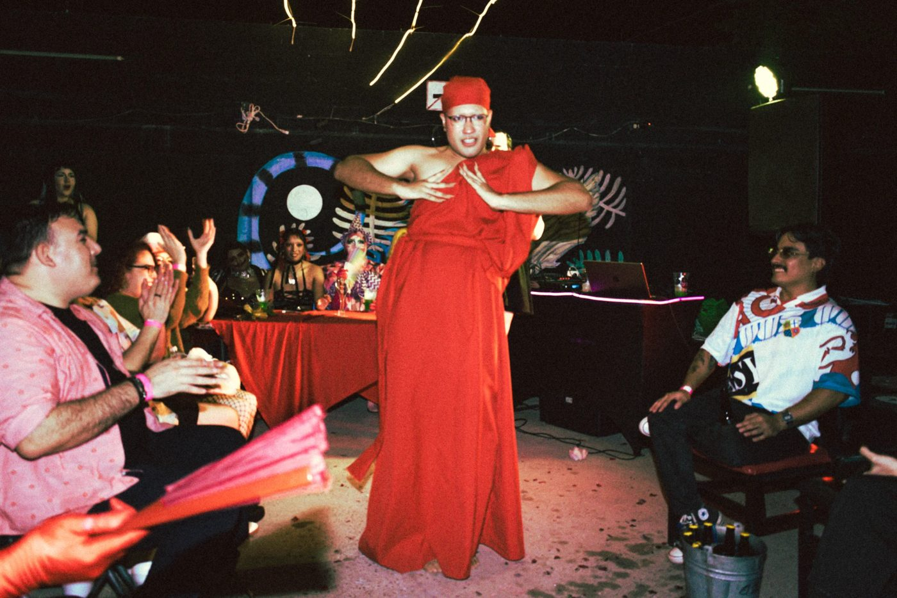

April Cosmic
Tucson, AZ / Ciudad Obregón, SON
/ Ballroom
/ DJ
/ Photography
/ Podcasts
/ Creative production

Born in Tucson, raised in Obregón, telling stories on both sides of the border.
Open to collaborations ↘
info@aprilcosmic.comBig things happen
in the desert too.
Usually because someone decided not to wait.
I'm a multidisciplinary storyteller and cultural manager. I've lived in Ciudad Obregón since I was nine. I founded House of Cosmic, the pioneering ballroom house in Sonora, and from there I organize balls, workshops and conversations. I also shoot photos, DJ, produce podcasts and video, and work with clients through CosmoMateria.
Get to know me ↗Ballroom pioneer in Sonora
Founder and Mother of House of Cosmic since 2023
Key figure in the cultural and LGBT+ scene
Recognized by the Sonora Institute of Culture, 2026
3 balls, up to 150 people
With guests from all over the state
Judge at 5 balls
In Obregón, Hermosillo and Navojoa
Ballroom
Let the population become a community. The ballroom house I founded in Sonora: House of Cosmic.
houseofcosmic.com ↗ 02DJ
70s disco and dance pop, for dance floors that refuse to go home.
Listen ↗ 03Photography
Portrait, body, color and night.
See the work ↗ 04Podcasts
UltraLocal and Jutonio: conversations with the local scene, and comedy from another planet.
Listen ↗ 05Creative production
Video, photo and communications for your project or event, through CosmoMateria.
cosmomateria.com ↗Let's work together ↘
WhatsApp or call